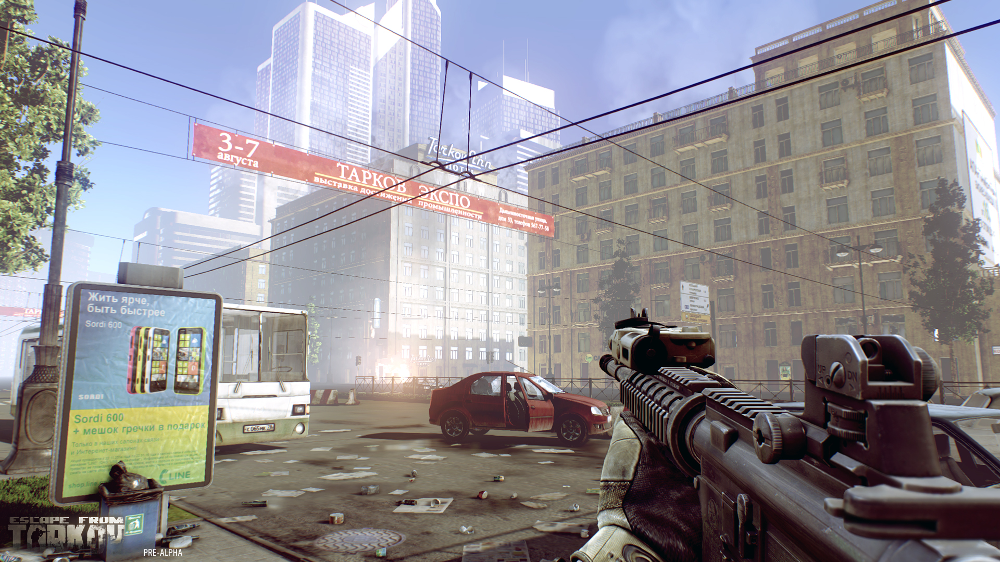
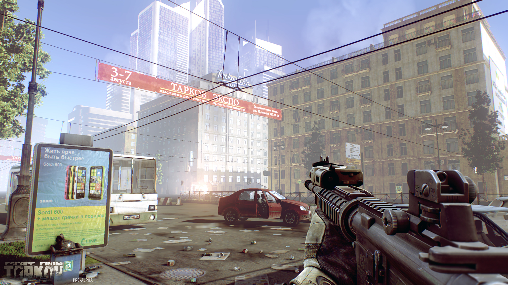

Sumergete en la ciudad de Tarkov
Tarkov es una ciudad perdida entre dos fronteras, siempre olvidada, nunca reclamada. Luego de la segunda guerra mundial, esta ciudad quedo aparentemente abandonada, tras ser victima de inumerables bombardeos y escenario de sangrientas escaramuzas militares. Paso a ser poco mas que un oscuro recuerdo para ambas naciones que comparten este territorio debido a la finalizacion de los conflictos bélicos. Pero todo cambia con el paso del tiempo, la paz que durante largos años goberno en la region esta llegando a su fin, tras una serie de incumplimientos bilaterales por parte de ambos paises involucrados y un creciente sentimiento de rechazo entre los pueblos. Petrov, reciente gobernante de Vernia, cree que los militares deben regir las leyes de su pais, con tintes por demas autoritarios, es duro e implacable tanto con propios como extraños. En las ultimas negociaciones con el Presidente Tolstov, de Gathka, florecieron antiguas disputas y rencores, el espiritu diplomatico de Tolstov no seria suficiente para contener la sed de conflicto de Petrov. Aquel fue el comienzo de una suerte de guerra sin declarar, no se trata de grandes movimientos de tropas, maquinarias, etc. Los conflictos que comenzaron a rodear la olvidada ciudad de Tarkov son aun, si se puede permitir el termino, pequeños asaltos. Sucede que lo que se creia una ciudad olvidada no era tal. Ya tres generaciones de tarkovianos son los que han vivido a la sombra del mundo, y estan dispuestos a todo por defender lo poco que queda de lo que en algun momento fuera una prospera ciudad indusrial. Si los conflictos no han escalado mas que a unas cuantas incursiones tanto vernias como gathkies se debe a la resistencia que han puesto los pobladores de la ciudad en ruinas. Bajas se han reportado en los tres bandos y a efectos geopoliticos todos los involucrados tienen en conocimiento que mantener un perfil bajo en cuanto a enfrentamientos es vital para no desestabilizar la region y generar quiebres en las alianzas politicas con otros paises vecinos. A pesar de todo esto, la incertidumbre en Tarkov recien esta asomando, el ambiente es tenso, la oscuridad esta llegando, y poco a poco son mas los escuadrones que se atreven a incurionar en estas tierras, defendidas por los locales, con zonas infestadas de minas, y con la posibilidad de encontrar de frente un escuadron militar de las fuerzas enemigas.
 

Calentando armas en Tarkov
Tanto vernios como gathkies incursionan constantemente en las ruinas de Tarkov, podras elegir cualquiera de las dos facciones. Cada faccion tiene un conjunto de armas, equipamientos y teconologias propias, deberas conocer poco a poco ambas facciones para saber como combatir con la otra, saber los fuertes y debilidades del enemigo siempre es una buena estrategia al momento de iniciar un enfrentamiento. Al ir cumpliendo misiones y extrerte exitosamente de la ciudad de Tarkov, iras ganando experiencia, la cual permitira desbloquear nuevas habilidades, mejorar tus tecnologias disponibles y evolucionar tus armamentos y defensas. La faccion de los vernios es conocida como la Usec, y los gathkies son conocidos como los Bear. Deberas escoger una al comenzar el juego, aunque eventualmente podras cambiarte a la opuesta, lo que aplica algunas penalidades, por lo que debes ser sabio y escoger con seguridad que camino seguir, o estar completamente firme a la hora de pasarte al otro lado.
Si lo que deseas es ponerte en la piel de los tarkovianos, tendras a tu disposicion una serie de misiones muy particulares, ya que no son una faccion como tal, sino un grupo de sobrevivientes que desean la paz en su territorioy con el tiempo levantar lo que alguna vez fue una reluciente ciudad. En cuanto a equipamiento, tecnolgia y demas, te encuentras en desventaja frente a la Usec y los Bear, pero tienes conocimientos extras sobre Tarkov, lo que supondra una ventaja importante para encontrar sitios clave en las ruinas de la ciudad, y ademas tu progreso sera mejor recompensado si logras extraer con vida en tus incursiones. Con el tiempo y la suba de niveles, iran desarrollando tecnologias y armamentos a partir de lo que puedan encontrar ya sea en los enemigos caidos como el las diversas edificaciones que hay en la ciudad, por lo que el juego ira poniendo las cosas en su lugar y emparejando las cosas a niveles altos. Jugar con los tarkovianos supone una exigencia extra, pero la recompensa final bien vale la pena.
Escape from Tarkov es un shooter tactico. Esto quiere decir que es bastante realista en cuanto a los recoil de las armas, la velocidad para apuntar a tu enemigo y ciertas cuestiones como disparar corriendo o lanzar prolongadas rafagas de balas, las cuales no son la mejor opcion en el campo de batalla. Algunos de ustedes quizas nunca hayan jugado un shooter y al comienzo es todo un desafio, que puede resultar frustrante y agobiante si nos lanzamos a la guerra sin absorber previamente los conceptos basicos. Recomendamos altamente, tomarse el tiempo necesario para jugar los tutoriales en sus diversas dificultades las veces necesarias. La seccion de entrenamiento es el lugar propicio para entender todas las mecanicas de movimientos, la funcionalidad de las distintas armas y la importancia de moverse adecuadamente por las calles de Tarkov. Por todo lo dicho anteriormente, dediquen tiempo a la practica y les aseguramos que la experiencia de juego se vera notablemente afectada para bien.
Luego del lanzamiento de la beta, nos tomaremos un tiempo para mejorar Escape from Tarkov al maximo, por lo que para la segunda beta, ya tenemos pensados algunos cambios e incorporaciones de mucha valia. Es cierto que es pronto para comentar esto cuando la primer beta aun no ha salido, pero nos gusta la idea de ir dando algunas primicias, sin aportar todos los detalles, para que vayan dandose una idea como evolucionara el juego. Para la segunda beta estrenaremos una nueva jugabilidad relacionada al juego en equipos, misiones en conjunto y recompensas especiales. Queremos que Tarkov sea un juego que aliente a todos a jugar en solitario y tambien, poder armar parties con amigos o conocidos y enfrentar misiones con dificultades elevadas para estimular el trabajo en equipo, la comunicacion y el crecimiento de la comunidad. Tropas de elite ya es una realidad que podran disfrutar en la segunda beta.